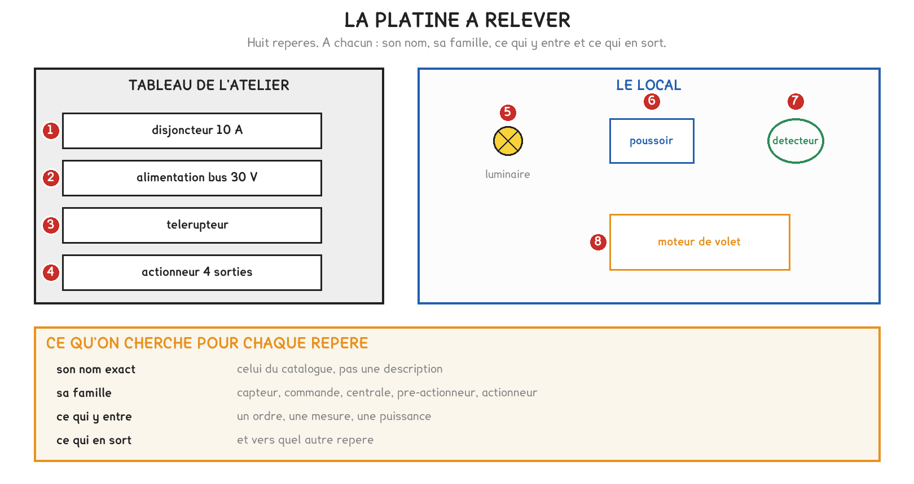
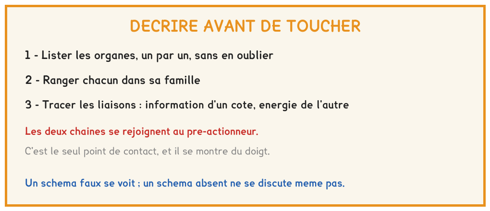

BTS FED option C · 1re année
Décrire un système qu'on n'a pas monté, sans le démonter : lister, classer, relier, puis vérifier par l'essai. C'est le premier jour d'une intervention, et c'est un savoir de niveau 3 du référentiel.
1 outil · 6 questions · 4 exercices · 2 replis · 3 figures
Savoirs travaillés
Une platine à huit repères, et l’interdiction d’y toucher. Vous avez nommé chaque organe par sa plaque, l’avez rangé dans sa famille, et dit ce qui y entre et ce qui en sort. Puis vous avez tracé les deux chaînes, décrit le fonctionnement en cinq lignes, et prévu par écrit ce que ferait l’installation avant d’appuyer sur quoi que ce soit.

Le référentiel liste six constituants d’un système centralisé : capteurs, pré-actionneurs, actionneurs, centrale, réseaux, supervision. La platine n’en montre qu’une partie, et ce qui manque se dit aussi.
| Famille | La question qui la reconnaît |
|---|---|
| Capteur | constate-t-il un phénomène physique, sans intervention humaine ? |
| Organe de commande | traduit-il une intention humaine ? |
| Pré-actionneur | reçoit-il un ordre, et établit-il ou coupe-t-il une puissance ? |
| Actionneur | produit-il un effet dans le bâtiment : lumière, mouvement, ouverture ? |
| Centrale | décide-t-il pour d’autres, à partir de ce qu’il reçoit ? |
La famille se juge sur la fonction, pas sur l’allure ni sur la tension. Deux appareils peuvent commuter la même puissance sans recevoir le même type d’ordre : ce sont deux pré-actionneurs, commandés différemment.
L’alimentation du bus n’est ni un pré-actionneur ni un actionneur : elle n’alimente aucun actionneur. Elle assure la fonction alimenter de la chaîne d’information, en 30 V continu, et c’est l’erreur type du tracé.
Le nom exact d’un appareil est celui de sa plaque, pas « la boîte grise ». Les plaques portent aussi les nombres qui dimensionnent : un calibre, une tension, un courant, un pouvoir de coupure.
| Ce qui est écrit | |
|---|---|
| Calibre du disjoncteur | |
| Tension et courant de l’alimentation bus | |
| Pouvoir de coupure d’une sortie de l’actionneur | |
| Tension de la bobine du télérupteur | |
| Repère du câble qui arrive au luminaire |
Participants possibles = I alimentation ÷ 10 mA
Le calibre du disjoncteur dit ce que supporte le circuit de puissance, pas ce que le bus peut alimenter.
Quatre choses se contrôlent sur le tracé, et rien d’autre :
Pour aller plus loin
Sur la platine, aucun appareil ne s’appelle centrale : chaque participant du bus contient un programme d’application qui décide de son action à la réception d’un télégramme. La fonction traiter est répartie, comme la séance A3 l’a montré.
La supervision, sixième constituant du référentiel, est un autre appareil encore : un poste qui recueille les états et présente un synoptique. Elle sera étudiée en fin d’année, avec la GTB.
| Ce qu’on fait | Ce que je prévois | Ce qui se passe |
|---|---|---|
| Appuyer une fois sur le poussoir 1 | ||
| Appuyer sur le poussoir 2, lampe déjà allumée | ||
| Passer la main devant le détecteur, lampe éteinte | ||
| Couper le disjoncteur, puis le remettre |
Une description n’est juste que si elle prévoit ce que fera l’essai. La prévision s’écrit avant : écrite après, elle transcrit ce qu’on vient de voir, et l’erreur de compréhension reste invisible.
Décrire le câblage au lieu du service rendu. « Le détecteur est câblé sur l’entrée 2 » n’est pas une fonction ; « le volet descend quand le soleil frappe la façade » en est une. Un verbe par fonction, au présent, sans marque.
Pour aller plus loin
Ce que fait un détecteur quand il détecte, et ce que fait un actionneur au retour de la tension, ne se lit pas sur l’appareil. Ce sont des paramètres, réglés à la mise en service : un détecteur peut allumer et éteindre, ou seulement éteindre ; une sortie peut redémarrer éteinte, allumée ou dans son état d’avant la coupure.
Une description qui suppose ces comportements sans les avoir vérifiés se trompe une fois sur deux. C’est pour cela que la prévision s’écrit avant l’essai, et que l’écart entre les deux est un résultat, pas une erreur.

Exercice · B8-1
La plaque d’une alimentation bus indique 640 mA. La ligne porte déjà 27 participants, à 10 mA chacun.
Combien de participants peut-on encore y raccorder ?
Exercice · C1-1
Le télérupteur commute un luminaire de 58 W ; l’actionneur 4 sorties commute trois luminaires de 36 W chacun. Le tout est alimenté en 230 V.
Quel courant traverse le disjoncteur quand tout est allumé ?
Exercice · B8-1
Un interrupteur crépusculaire commande l’éclairage extérieur d’un parking à la tombée de la nuit, sans que personne n’intervienne.
Dans quelle famille se range-t-il ?
Exercice · B8-1
Un écran tactile mural et un détecteur de mouvement envoient le même télégramme au même actionneur. Expliquer en trois ou quatre lignes pourquoi ils ne sont pourtant pas de la même famille.
La séance B4 mesure sur trois médias : la tension et la chute d’un bus, la portée d’une radio à travers les cloisons, la liaison d’un CPL d’une phase à l’autre. C’est la première trace de C7 de l’année, et chaque case du relevé attend une valeur, une unité et l’appareil, comme en séance B1.
Cette page rappelle la séance. Elle ne remplace pas le polycopié et ne donne aucun corrigé. Tous les calculs se font dans votre navigateur ; rien n'est enregistré.